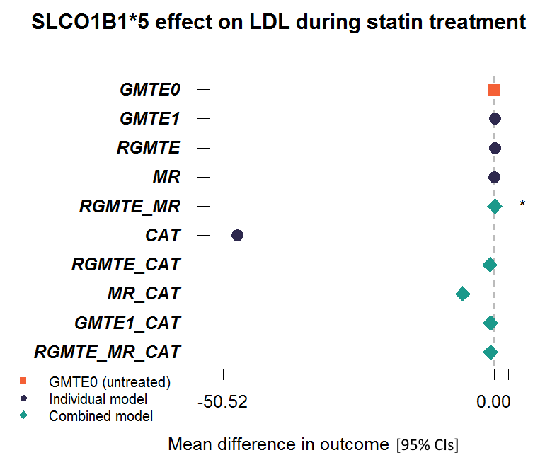
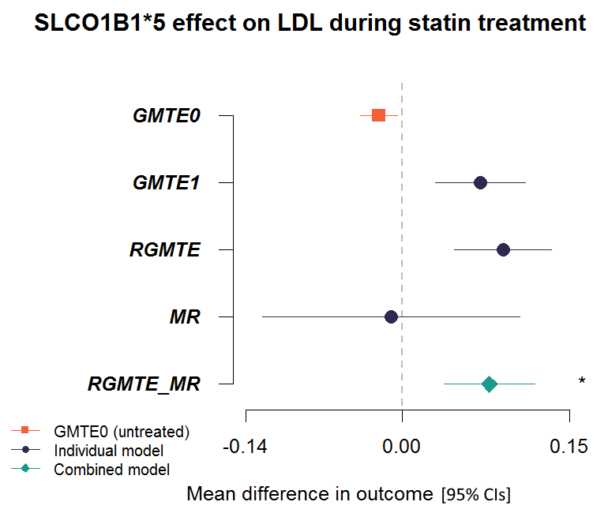

TWIST (Triangulation WIthin A STudy) analysis in R.
The TWIST framework estimates the ‘genetically moderated treatment effect’ (GMTE). This is akin to the population attributable fraction (PAF) in pharmaco-epidemiology: the excess disease or outcomes in individuals prescribed a specific medication that are attributed to genetic variant(s). TWIST extends the PAF by incorporating information on both treated and untreated individuals. With this larger set of information we show that four analysis approaches for estimating the GMTE are possible. Each one relies on a different set of assumptions to work correctly and provides estimates that are largely uncorrelated with one another. A decision framework is used to decide when a particular estimation strategy is most appropriate and how specific estimators can be combined to further improve efficiency. Triangulation of evidence from different data sources, each with their inherent biases and limitations, is becoming a well established principle for strengthening causal analysis. Hence we called our framework ‘Triangulation WIthin a STudy’ (TWIST) in order to emphasise that an analysis in this spirit is also possible within a single data set, using causal estimates that are approximately uncorrelated, but reliant on different sets of assumptions.
TWIST therefore robustly estimates how many events (outcome can be mortality, disease, symptoms, etc) in the genotype group could be avoided if this group could experience the same treatment effect as non-carriers.
Please see our published paper in PLoS Genetics for further information https://doi.org/10.1371/journal.pgen.1009783
If you use this package please cite
Bowden J, Pilling L, Türkmen D, Kuo C-L, Melzer D (2021) The Triangulation WIthin a STudy (TWIST) framework for causal inference within pharmacogenetic research. PLoS Genet 17(9):e1009783. https://doi.org/10.1371/journal.pgen.1009783
Installation
To install the development version from GitHub use the remotes package:
remotes::install_github("lcpilling/twistR")
# To install the latest release, use:
remotes::install_github("lcpilling/twistR@*release")
# To install a specific version (see tags), use:
remotes::install_github("lcpilling/twistR@v0.1.0")Model types performed
twistR can perform GMTE analysis on three types of outcome: 1. gmte_binary() performs logistic regression analysis of a binary outcome (yes/no [1]/[0]). Requires the margins package. 2. gmte_continuous() performs linear regression analysis of a continuous outcome (quantitative measure, such as LDL cholesterol). 3. gmte_aalen() performs Aalen additive hazards model i.e. a time-to-event analysis (such as mortality). Requires the timereg package.
Function arguments
gmte_binary()
| Argument | Description |
|---|---|
| Y | The binary outcome variable name (string) which appears in data.frame D. |
| T | The treatment variable name (string) which appears in data.frame D. Assumed to be binary. |
| G | The genotype variable name (string) which appears in data.frame D. Normally binary (e.g. comparing homozygous rare individuals to the rest of the population). |
| Z | A string containing the model covariates to appear in the glm() models (for example “age+sex”). All need to be in data.frame D. |
| D | A data.frame containing the above variables. |
| Link | Link function for the glm() - needs to be one of “logit”,“probit” or “identity”. If unspecified the default is “logit”. |
| alpha | The p-value threshold for the chi-square test, assessing whether two estimates should be combined. Default is 0.05. |
gmte_continuous()
| Argument | Description |
|---|---|
| Y | The continuous outcome variable name (string) which appears in data.frame D. |
| T | The treatment variable name (string) which appears in data.frame D. Assumed to be binary. |
| G | The genotype variable name (string) which appears in data.frame D. Normally binary (e.g. comparing homozygous rare individuals to the rest of the population). |
| Z | A string containing the model covariates to appear in the glm() models (for example “age+sex”). All need to be in data.frame D. |
| D | A data.frame containing the above variables. |
| alpha | The p-value threshold for the chi-square test, assessing whether two estimates should be combined. Default is 0.05. |
gmte_aalen()
| Argument | Description |
|---|---|
| Y_t0 | Variable name (string) for when participants “enter” the model, which appears in data.frame D. When participants enter the model (can be all 0s if Y_t1 is time since start of exposure). Variable can be in date format from the as.Date() function, or numeric. |
| Y_t1 | Variable name (string) for when participants “exit” the model, which appears in data.frame D. Either days since start of exposure period (numeric) or in date format from the as.Date() function. |
| Y_d | Variable name for the binary “event” variable (string) which appears in data.frame D. |
| T | The treatment variable name (string) which appears in data.frame D. Assumed to be binary. |
| G | The genotype variable name (string) which appears in data.frame D. Normally binary (e.g. comparing homozygous rare individuals to the rest of the population). |
| Z | A string containing the model covariates to appear in the glm() models (for example “age+sex”). All need to be in data.frame D. Unless otherwise specified covariates will be assumed to be time invarying i.e. the const() wrapper will be added. See aalen() documentation in the timereg package. |
| D | A data.frame containing the above variables. |
| Nsim | Number of simulations to perform in the aalen() models. Default is 100. |
| alpha | The p-value threshold for the chi-square test, assessing whether two estimates should be combined. Default is 0.05. |
Output and examples
For each GMTE function a object of class twistR_GMTE is returned. This contains the full model outputs from each individual analysis performed (GMTE1, GMTE0, MR, RGMTE, and CAT – see paper) in addition to a summary of all the models performed and whether the models can be combined to improve estimation in $FullCombined. For example:
Example using binary outcome
# Example using:
# - a binary outcome (high LDL) - in data.frame D
# - a binary treatment variable (on statins) - in data.frame D
# - a binary genotype (SLCO1B1*5 homozygotes) - in data.frame D
# - adjustment for age and genetic principal components of ancestry 1 to 10 - all in data.frame D
Y="ldl_high"
T="statin"
G="slco1b1_5_hmz"
Z="age+PC1+PC2+PC3+PC4+PC5+PC6+PC7+PC8+PC9+PC10"
Link="logit"
results=gmte_binary(Y,T,G,Z,D,Link)Prints the following results table:
| Model | Est | SE | P.Est | Qstat | Qp | Combine? |
|---|---|---|---|---|---|---|
| CAT | -1.315816e+01 | 0.07672673 | 0.000000e+00 | NA | NA | NA |
| GMTE0 | -8.747968e-04 | 0.00596922 | 8.834862e-01 | NA | NA | NA |
| GMTE1 | 5.823592e-02 | 0.01373771 | 2.243879e-05 | NA | NA | NA |
| RGMTE | 7.525366e-02 | 0.01630214 | 3.908640e-06 | NA | NA | NA |
| MR | -8.593626e-04 | 0.04927101 | 9.860844e-01 | NA | NA | NA |
| RGMTE_MR | 6.774350e-02 | 0.01547698 | 1.202974e-05 | 2.150891 | 0.1424872 | 1 |
| RGMTE_CAT | -4.963459e-01 | 0.01594618 | 0.000000e+00 | 28462.588988 | 0.0000000 | 0 |
| MR_CAT | -3.842414e+00 | 0.04145881 | 0.000000e+00 | 20820.492332 | 0.0000000 | 0 |
| GMTE1_CAT | -3.522933e-01 | 0.01352266 | 0.000000e+00 | 28749.387485 | 0.0000000 | 0 |
| RGMTE_MR_CAT | -4.493672e-01 | 0.01517140 | 0.000000e+00 | 28554.130703 | 0.0000000 | 0 |
Which estimate should I use?
To understand which estimate is best to use, the user needs to consider the following: * the context of the specific treatment and population, * the assumptions made by each method and whether they are plausible, * whether a pair or triplet of estimates (such as the MR and RGMTE estimates) are sufficiently similar to combine (default alpha 0.05 for Q-statistic (Qp)).
Though the Robust GMTE (RGMTE) estimate is often the most appropriate, in some situations the assumptions may not be satisfied and a combined estimate may be better. For this reason we do not automatically give a recommendation when the analysis is performed. For the combined estimates the Combine? column simply reports whether the p-value for the Q-statistic (Qp) is >0.05 i.e. the estimates do not significantly differ. This does not necesssarily mean it is the best choice. For futher information on the assumptions tested and decision framework please see the published manuscript (open access in PLoS Genetics https://doi.org/10.1371/journal.pgen.1009783).
What does the estimate mean?
We can express the GMTE estimand as the average causal effect if everyone could receive moderated treatment level T* = 1 (i.e. the full or enhanced effect) versus if everyone could receive treatment level T* = 0 (i.e. no enhanced effect).
- For a binary analysis, the
Estis the risk difference if all people could experience the same treatment effect as those with genotype G=1 versus if all people could experience the treatment effect as those with genotype G=0. - For a continuous analysis, the
Estis the mean difference in outcome (units) if all people could experience the same treatment effect as those with genotype G=1 versus if all people could experience the treatment effect as those with genotype G=0. - For a time-to-event (Aalen) analysis, the
Estis the risk difference per unit time (provided by user inY_t0andY_t1, e.g. per year if time coded on the year scale) if all people could experience the same treatment effect as those with genotype G=1 versus if all people could experience the treatment effect as those with genotype G=0.
Example using Aalen additive hazards
In our paper we include results from our analysis of the anti-platelet drug clopidogrel, where genetic variants in gene CYP2C19 impair drug metabolism and reduce function, thereby increasing risk of thrombosis. We used the Aalen additive hazards models to estimate the increased risk of ischemic stroke in UK Biobank participants prescribed clopidogrel, who carried CYP2C19 Loss of Function (LoF) variants (2-8).
# Example using:
# - a time-to-event model (time to ischemic stroke) - time to stroke/censoring is in "years" so output should be interpreted this way
# - a binary treatment variable (on clopidogrel)
# - a binary genotype (CYP2C19 *2-*8 LoF carriers)
# - adjustment for age and genetic principal components of ancestry 1 to 10
# ^^ all need to be in data.frame D
Y_t0="time_0"
Y_t1="time_to_stroke"
Y_d="stroke_binary"
T="clopidogrel"
G="cyp2c19_lof"
Z="age+sex+PC1+PC2+PC3+PC4+PC5+PC6+PC7+PC8+PC9+PC10"
results=gmte_aalen(Y_t0,Y_t1,Y_d,T,G,Z,D)Prints the following results table:
| Model | Est | SE | EstP | Qstat | Qp | Combine? |
|---|---|---|---|---|---|---|
| CAT | 0.021600000 | 0.0020800000 | 0.000000e+00 | NA | NA | NA |
| GMTE0 | -0.000038600 | 0.0000747000 | 6.030000e-01 | NA | NA | NA |
| GMTE1 | 0.002770000 | 0.0014000000 | 4.550000e-02 | NA | NA | NA |
| RGMTE | 0.003290000 | 0.0015800000 | 3.600000e-02 | NA | NA | NA |
| MR | 0.002870000 | 0.0010800000 | 7.970000e-03 | NA | NA | NA |
| RGMTE_MR | 0.003003747 | 0.0008916086 | 7.546674e-04 | 0.04815988 | 8.262967e-01 | 1 |
| RGMTE_CAT | 0.009989461 | 0.0012581694 | 1.998401e-15 | 49.13761212 | 2.386202e-12 | 0 |
| MR_CAT | 0.006847329 | 0.0009584958 | 9.077183e-13 | 63.86777236 | 1.332268e-15 | 0 |
| GMTE1_CAT | 0.008640896 | 0.0011614228 | 1.008083e-13 | 56.40253563 | 5.906386e-14 | 0 |
| RGMTE_MR_CAT | 0.005890357 | 0.0008194919 | 6.583623e-13 | 67.57323818 | 2.109424e-15 | 0 |
(This table appears as Table 5 in the paper in PLoS Genetics https://doi.org/10.1371/journal.pgen.1009783)
Estimating the GMTE / interpreting the output
To estimate the GMTE in this case we modelled the time to stroke using an Aalen additive hazards model, as described in the paper. All models were adjusted for age at recruitment or first Clopidogrel prescription, sex, and the first 10 genetic principal components of ancestry. The above Table show the results for this analysis, which reflect the genetically moderated effect of Clopidogrel treatment on the hazard of stroke per year, expressed as a proportion (i.e. multiply by 100 to get percentage, as shown in Table 5 of paper). The GMTE(1) estimate suggests that being a CYP2C19 LoF carrier (G = 1) increases the risk of stroke by 0.28% (p = 0.048) compared to those without the LoF variant (G = 0). To put this figure in context, if we could reduce the LoF carrier’s risk by this amount then, when multiplied by the 5264 LoF carrier patient years in the data, it would lead to an expected 13.2% reduction in the total number of strokes. There were 110 strokes in the LoF group, so we would expect this to reduce by 15 (110 to 95) if carriers of a CYP2C19 LoF variant could experience the same treatment effect as non-carriers.
To test for potential bias in the GMTE(1) estimate, we calculate the GMTE(0) estimate in the untreated population. Thankfully, it is close to zero (Hazard diff = -0.0039%, p = 0.61), although slightly negative. Taken at face value, this suggest LoF carriers have a slightly reduced risk of stroke through pathways other than Clopidogrel use. Next we calculate the Corrected As Treated (CAT) estimate. As discussed in the paper, the validity of this method rests strongly on being able to identify all confounders of Clopidogrel use and stroke. With the data available, it was only possible to adjust for age, sex and genetic principal components and perhaps unsurprisingly, the CAT estimate is an order of magnitude larger (Hazard diff = 2.2%, p=2*10−16). Consequently, the Q[CAT,GMTE(1)] statistic detects large heterogeneity and suggests that the CAT and GMTE(1) estimates should not be combined.
For completeness, we next calculate the RGMTE estimate for the GMTE hazard difference. Since this is itself the difference between the GMTE(1) and GMTE(0) estimates, and given they are of opposite sign, the RMGTE estimate is slightly larger at 0.33% (p = 0.037), suggesting 17 strokes could have been avoided. The MR estimate for the GMTE hazard difference is similar at 0.29% (p = 0.008). Heterogeneity analysis reveals that the MR and RGMTE estimates are sufficiently similar to combine into a more precise single estimate of the GMTE (Q[MR,RGMTE] = 0.8). The combined estimate is 0.3 (p = 7.5*10-4), or that 16 strokes could have been avoided. No other combination of estimates are sufficiently similar to combine.
Forest plot of estimates
To create a simple Forest Plot the estimates simply provide the output of a GMTE analysis:
# Example using a continuous outcome (LDL), binary treatment (statins), and binary genotype (SLCO1B1*5 homozygotes) variables
Y="ldl"
T="statin"
G="slco1b1_5_hmz"
Z="age+PC1+PC2+PC3+PC4+PC5+PC6+PC7+PC8+PC9+PC10"
results=gmte_continuous(Y,T,G,Z,D)
#Model Est SE EstP Qstat Qp Combine?
#CAT -47.79761593 0.156521799 0.000000e+00 NA NA NA
#GMTE0 -0.02057607 0.008486743 1.533007e-02 NA NA NA
#GMTE1 0.06984053 0.020476099 6.477051e-04 NA NA NA
#RGMTE 0.09039080 0.022162475 4.532468e-05 NA NA NA
#MR -0.01003960 0.058701522 8.642019e-01 NA NA NA
#RGMTE_MR 0.07786137 0.020733971 1.731645e-04 2.561888 0.1094678 1
#RGMTE_CAT -0.85083255 0.021943596 0.000000e+00 91766.240141 0.0000000 0
#MR_CAT -5.90268766 0.054963272 0.000000e+00 81719.705349 0.0000000 0
#GMTE1_CAT -0.73556685 0.020303105 0.000000e+00 91952.071936 0.0000000 0
#RGMTE_MR_CAT -0.74774632 0.020554416 0.000000e+00 91946.240796 0.0000000 0
# plot these estimates, highlighting the individual and combined estimates
gmte_plot(results, plot_title = "SLCO1B1*5 effect on LDL during statin treatment")
Remove CAT estimates for “cleaner” plot
As previously mentioned, the validity of the CAT method rests strongly on being able to identify all confounders of the treatment and the outcome. In this analysis it was only possible to adjust for age, sex and genetic principal components. Therefore the CAT estimate is disproportionately larger and consequently, the Q[CAT,GMTE(1)] statistic detects large heterogeneity, suggesting that the CAT and GMTE(1) estimates should not be combined.
gmte_plot(results, plot_title = "SLCO1B1*5 effect on LDL during statin treatment", plot_cat=FALSE)